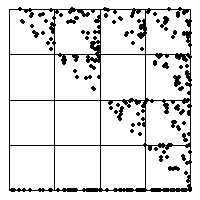

5. Here is the Driven IFS.
|  |
Note the data fall into three clearly different regimes, indicated by the vertical lines superimposed on the data plot.
| In the first regime, the data fall into only bins 2, 3, and 4. |
| As we saw in exercise 4 (b),
in the driven IFS this generates points lying on the gasket with vertices |
| In the second regime, all the data points fall into bin 2. |
| The driven IFS points march down to the point |
| In the third regime, the data fall into only bins 1 and 2. |
| Starting from (very near to) the point |
Return to Exercises.